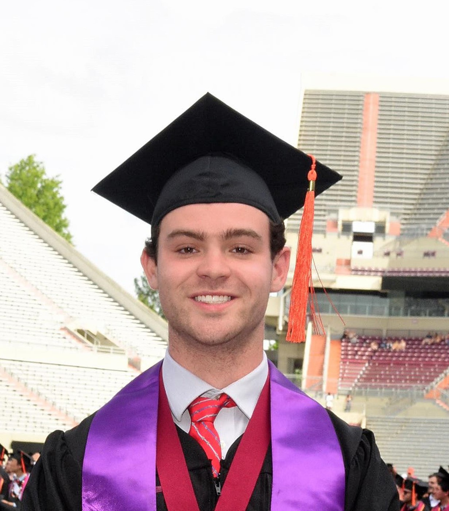
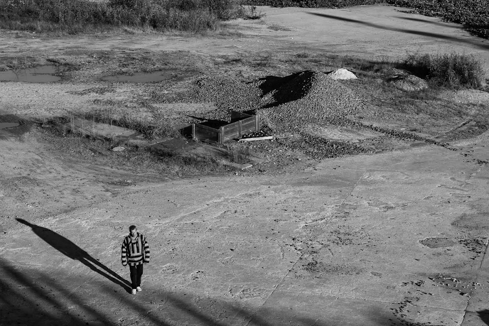

ATTICUS REX
Intellēctuālis.
About
Atticus Rex Resume
Welcome! I am a recent graduate of Virginia Tech where I graduated Summa Cum Laude and received an Honors Laureate Diploma. I received a B.S. in Mechanical Engineering and a B.S. in CMDA (Computational Modeling & Data Analytics). I also have minors in Mathematics and PPE (Philosophy, Politics and Economics). My coursework totaled to 227 complete credit hours. Come Fall 2023, I will be pursuing an M.S. in Computational Data Analytics at Georgia Tech. This website serves as a repository to display some of my recent work in senior capstone projects and extracurricular research (Located at the links to the right).


Education and Skills:
With a degrees in Mechanical Engineering and Computational Modeling and Data Analytics (CMDA), I have gained a
comprehensive skillset within both fields. My coursework has developed my abilities in subjects such as mathematical modeling,
statistics, mechanical design, computer science, physics, technical writing, ethics, and effective teamwork, allowing me to
approach challenges from multiple perspectives. I am Fundamentals of Engineering (FE Mechanical) Certified and have advanced
programming skills in Python, Java, SQL, C/C++, R, MATLAB, Git, and Linux. I am well-versed in prototyping, finite element analysis (FEA),
and computational fluid dynamics (CFD) using software such as Solidworks, Ansys, and Siemens NX. Additionally, my fluency in
Spanish enables effective communication in diverse settings.
Work Experience:
Throughout my academic journey, I have gained invaluable practical experience. As a private tutor, I have guided students through a wide
range of subjects, including mathematics, physics, computer science, Spanish, and visual arts. This experience has strengthened my
ability to communicate complex concepts effectively and adapt my teaching approach to meet individual needs. During my internship in
Riobamba, Ecuador, I led software development and data analytics projects for a VT Agriculture and Applied Economics Research Group.
I applied my technical expertise and leadership skills to contribute valuable insights and solutions. As a Data Science for the Public Good intern,
I collaborated with Virginia Tech and the University of Virginia on research presented at a joint symposia. I leveraged convolutional and
LSTM neural networks to analyze vegetative health using multispectral satellite data, and I helped reconstruct a multidimensional poverty index
for the Zimbabwe Statistical Agency. In my role as a mathematics lecturer at VT SAASS, I delivered open lectures in various calculus courses,
demonstrating my ability to engage and inspire students while conveying complex mathematical concepts.
`


Research:
My research endeavors have allowed me to delve into cutting-edge topics and make meaningful contributions. I served as a technical lead
for the design and validation of an active control system aimed at improving the controllability of an antenna test fixture. Additionally,
I explored reservoir computing models for dynamical system modeling, comparing their performance with existing frameworks.
I also developed an algorithm to effectively differentiate noisy signals, adapting the Total Variation Regularized Derivative.
In my CMDA capstone project,
I designed and manufactured a pendulum with multiple swinging masses. With this prototype, I developed an object tracking algorithm and a theoretical
framework to demonstrate eigenvalue analysis, providing future CMDA Math Modeling students with a practical learning tool.
In my PPE capstone project, I applied economic research in neuroeconomics to analyze the impact of AI-induced neuropleasurable experiences, shedding light
on ethical concerns and economic externalities.
Extracurricular: Beyond my academic pursuits, I have actively engaged in extracurricular activities. As a member of Virginia Tech Honors College,
I taught a reading seminar on Romantic-Era Poetry and explored various subjects through faculty-student agreements. I have conducted investigations into
information ethics, political realism, big nudging, and dynamical systems, showcasing my intellectual curiosity and critical thinking skills.
Within the Sigma Phi Epsilon Fraternity, I served as the Academic Chair for the SigEp Learning Community. I routinely participated in fundraising efforts,
generating over $30,000 annually for the Montgomery County Emergency Assistance Program (MCEAP).
`